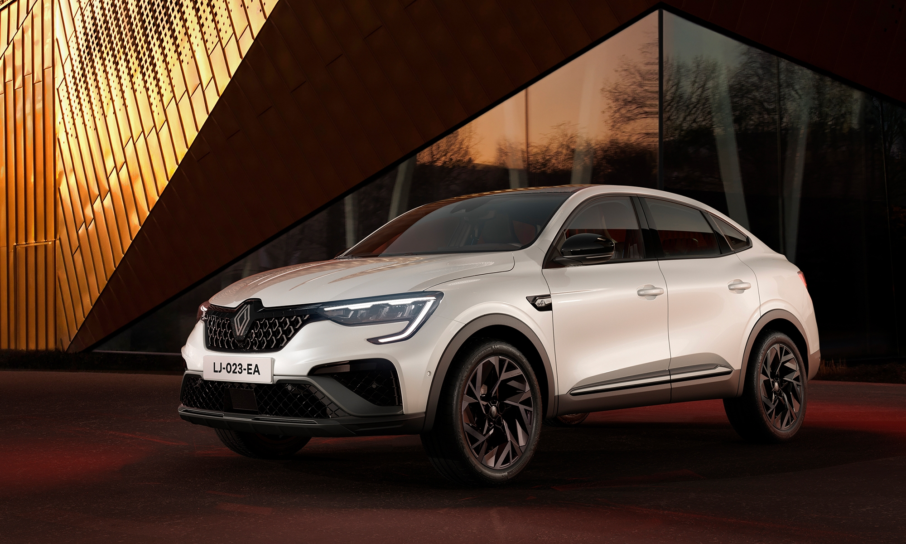

citroen arkana

| Diseño | El SUV deportivo se reinventa: nueva calandra cromada en negro brillante con patrones de rombos desestructurados y una parte trasera con faros modernizados. La adrenalina sube aún más en la versión esprit Alpine: letras negras cromadas, insignia Alpine en las aletas delanteras y llantas de 19’’. Su carácter exclusivo se despliega en el interior: tapicería con tejido bio de ante con costuras azules y adornada con el logotipo de Alpine. Volante calefactable con costuras de color azul/blanco/rojo. |
| Motor | 140 CV |
| Interior | Las exquisitas sensaciones que transmiten los materiales, el techo abierto de cristal y la inmersión musical con sonido Bose® se suman para ofrecerte aún más placer al volante. Disfrutarás de un eficaz sistema conectado, tres cómodas plazas traseras y un gran maletero modulable. Todo un mundo de posibilidades. |